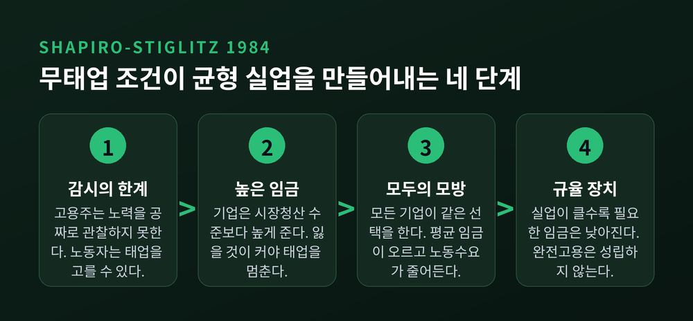
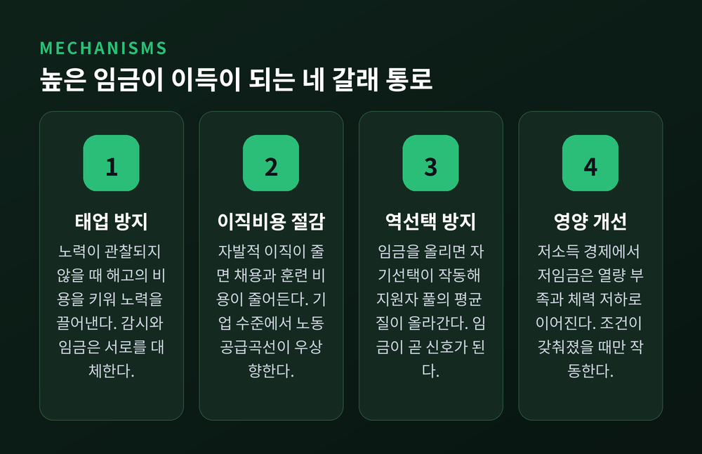
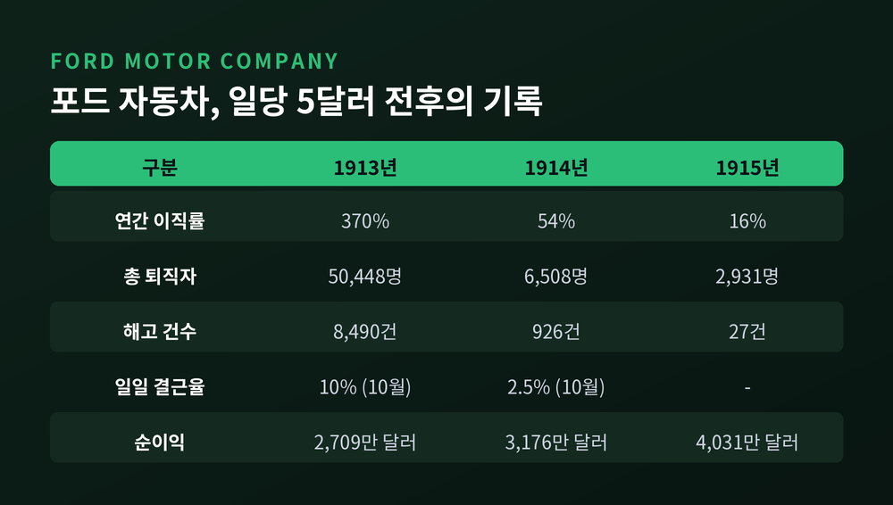
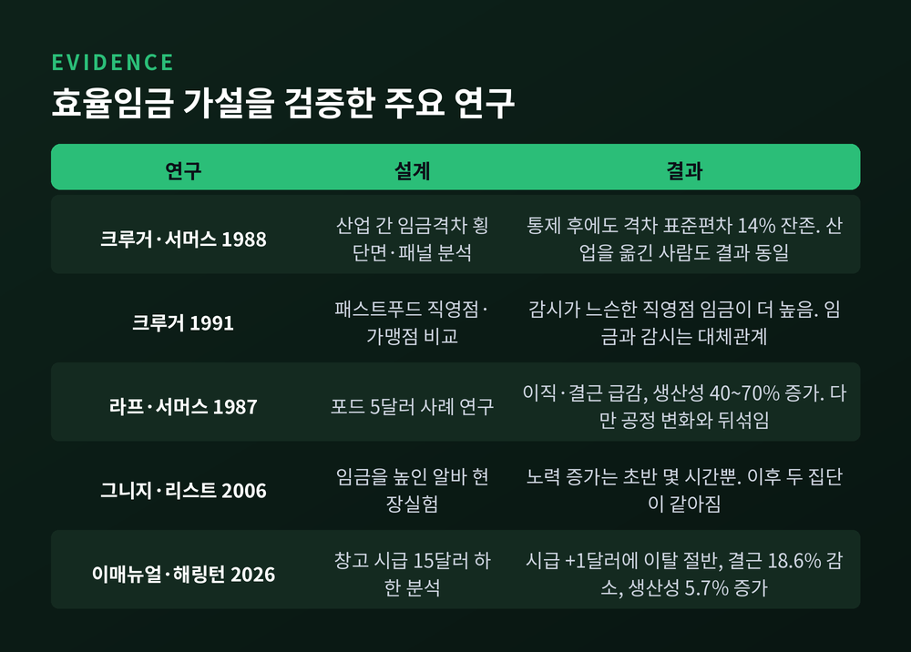

효율임금 이론, 기업은 왜 시장 균형보다 높은 임금을 주는가
이번 글에서는 효율임금 이론을 정리해 보겠습니다. 시장이 정한 임금보다 높은 돈을 기업이 자발적으로 지불하는 이유, 그리고 그 선택이 왜 실업을 남기는지를 따라가 봅니다.
결론부터 말씀드리면 이렇습니다. 높은 임금은 노동자의 행동을 바꿉니다. 그 변화가 임금 인상분보다 크면, 임금을 깎는 쪽이 오히려 손해입니다. 그래서 임금은 시장청산 수준으로 내려가지 않고, 그 자리에 실업이 남습니다.
노동은 자본과 다르다
표준 노동시장 모형은 노동을 자본과 비슷하게 다룹니다. 값을 치르고 빌려 오는 투입물로 봅니다.
그런데 결정적인 차이가 하나 있습니다. 기계는 스위치를 켜면 정해진 만큼 돌아갑니다. 사람은 그렇지 않습니다. 노동자는 자신의 노력 수준을 스스로 고릅니다.
정보가 완전하다면 문제가 없습니다. 얼마나 열심히 일했는지 보이니까요. 하지만 고용주는 노력을 공짜로 관찰하지 못합니다. 여기서 모든 것이 달라집니다.
경쟁 모형의 예측은 단순합니다. 모든 노동자는 유보임금을 받고, 실업은 존재하지 않으며, 같은 생산성을 가진 사람의 임금 차이는 지속될 수 없습니다.
현실은 다릅니다. 같은 능력의 사람이 어느 회사에 다니느냐로 임금이 달라집니다. 그 격차는 수십 년째 사라지지 않습니다.
효율임금 이론은 이 간극에서 출발합니다. 핵심 전제는 하나입니다. 기업이 임금을 일방적으로 정하고, 시장청산 수준까지 내리지 않기로 선택한다는 것입니다. 내리면 노력과 사기, 채용과 근속이 함께 무너져 결국 이윤이 줄기 때문입니다.
실업이 규율 장치가 되는 논리
가장 유명한 정식화는 1984년 칼 샤피로와 조지프 스티글리츠의 「노동자 규율 장치로서의 균형 실업」입니다.
설정은 간결합니다. 노동자는 임금 w를 받고 노력을 들이거나(비용 e), 아니면 태업합니다. 태업해도 같은 임금을 받습니다. 다만 감시 강도 q의 확률로 적발되어 해고됩니다. 실업자는 소득 b를 받으며 구직률 a로 새 일자리를 찾습니다.
노동자의 계산은 이렇게 됩니다. 태업해서 아끼는 노력의 값어치와, 적발되어 잃게 될 일자리의 값어치를 비교하는 것입니다.
여기서 무태업 조건이 나옵니다. 정리하면 이런 모양입니다.
w ≥ b + e + (e/q) × (δ/u + r)
기호가 낯설어도 읽는 법은 어렵지 않습니다. 태업을 막는 데 필요한 임금은 노력의 비용 e가 클수록, 할인율 r이 클수록 높아집니다. 감시가 촘촘할수록(q가 클수록) 낮아집니다. 감시와 임금은 서로를 대체합니다.
가장 중요한 항은 마지막에 숨어 있습니다. u는 실업률입니다.
실업률이 낮을수록 필요한 임금은 높아집니다. 해고당해도 곧바로 다른 일자리를 구한다면, 해고는 벌칙이 아니기 때문입니다. u가 0으로 가면 필요한 임금은 무한대로 발산합니다.
즉 완전고용은 이 모형과 양립할 수 없습니다.

여기서 두 가지 결론이 따라 나옵니다.
첫째, 실업은 비자발적입니다. 실업자는 그 임금보다 낮게라도 일할 의사가 있습니다. 그런데 "낮은 임금에서도 태업하지 않겠다"는 약속을 신뢰성 있게 할 방법이 없습니다. 고용주는 그 약속을 믿을 수 없으니 뽑지 않습니다.
둘째, 임금은 잘 내려가지 않습니다. 불황이 와서 노동수요가 줄어도 무태업 조건이 임금의 바닥을 받칩니다. 조정은 임금이 아니라 고용량으로 이뤄집니다.
이 균형은 효율적이지도 않습니다. 기업은 사회적 비용 e가 아니라 그보다 높은 사적 비용 w에 직면합니다. 그래서 고용을 너무 적게 합니다. 실업이 사회적으로 필요한 수준보다 많다는 뜻입니다.
높은 임금이 이득이 되는 네 갈래 통로
태업 방지는 하나의 경로일 뿐입니다. 문헌은 대체로 네 갈래를 함께 다룹니다.

하나, 태업 방지. 앞서 본 샤피로-스티글리츠의 경로입니다. 해고의 비용을 키워 노력을 끌어냅니다.
둘, 이직비용 절감. 1979년 스티븐 샐롭의 모형입니다. 임금을 올려 자발적 이직을 줄이면 채용·선별·교육 비용이 줄어듭니다. 기업 특수적 훈련에 투자할수록 이 유인은 커집니다. 흥미로운 결과가 하나 따라옵니다. 시장 전체의 노동공급이 수평이어도, 기업 수준에서는 우상향하는 노동공급곡선이 생깁니다.
셋, 역선택 방지. 1980년 앤드루 와이스의 모형입니다. 지원자의 능력은 사적 정보입니다. 낮은 임금만 제시하면 지원자 풀의 평균 질이 떨어집니다. 임금을 올리면 자기선택이 작동해 좋은 지원자가 모입니다. 스펜스의 신호 이론을 뒤집은 구조입니다. 노동자가 학력으로 신호를 보내는 대신, 기업이 임금으로 신호를 보냅니다.
넷, 영양 가설. 1957년 하비 라이벤스타인이 제시했습니다. 저소득 경제에서 저임금은 칼로리 부족으로 이어지고, 체력이 떨어지면 생산성도 떨어집니다. 1970~80년대 인도 농업 연구에서 임금 10% 인상이 노동자당 산출을 5~15% 높인다는 추정이 나왔습니다. 다만 녹색혁명 이후 열량 부족이 완화되면서 이 탄력성은 여러 지역에서 0에 가깝게 줄었습니다. 조건이 갖춰졌을 때만 작동하는 메커니즘인 셈입니다.
여기에 다섯 번째를 덧붙이는 흐름도 있습니다. 1982년 조지 애컬로프의 선물교환 모형입니다.
애컬로프는 노력이 '하루치 정당한 일'을 정하는 규범에 달려 있다고 봤습니다. 노동자가 내놓는 선물은 최소 기준을 넘는 노동이고, 기업이 내놓는 선물은 다른 곳에서 받을 수 있는 수준을 넘는 임금입니다. 높은 임금에는 호혜로, 낮은 임금에는 최소한의 노동으로 답한다는 것입니다.
앞의 네 갈래가 계산하는 인간을 가정한다면, 이 모형은 갚으려는 인간을 가정합니다. 같은 예측을 전혀 다른 인간관에서 끌어낸 셈입니다.
1914년 포드, 일당 5달러
이론이 아무리 정교해도 검증이 어렵습니다. 그래서 이 분야에서 가장 많이 인용되는 것은 한 회사의 사례입니다.
1913년 포드 자동차의 상황은 좋기도 하고 나쁘기도 했습니다.
좋은 쪽부터 보겠습니다. 이동식 섀시 조립라인이 그해 12월 도입되면서 모델 T 한 대의 조립시간이 12시간 30분에서 93분으로 줄었습니다. 600달러 이하 저가차 시장에서 모델 T의 점유율은 96%였습니다. 매출 대비 이익률은 31%에 달했습니다.
나쁜 쪽은 사람이었습니다. 1913년 포드 공장의 연간 이직률은 370%였습니다. 평균 인력 13,623명을 유지하려고 그해 50,448명을 새로 뽑아야 했습니다. 당시 디트로이트에서 200% 이직률이 흔했다는 점을 감안해도 이례적인 숫자입니다.
한 달 통계를 보면 성격이 더 분명해집니다. 1913년 3월에만 7,300명 넘게 회사를 떠났는데, 그중 해고는 18%, 정식 사직은 11%뿐이었습니다. 나머지 71%는 닷새 연속 말없이 나오지 않아 자동 퇴사 처리된 사람들이었습니다. 일일 결근율은 10%였습니다.
1914년 1월 5일, 헨리 포드와 부사장 제임스 커즌스는 일당을 5달러로 두 배 올린다고 발표합니다.
실제 제도는 임금 인상이 아니었습니다. 이익 공유였습니다. 일당 2.30달러를 받던 사람은 기본급을 그대로 받고, 회사 요건을 충족하면 2.70달러를 보너스로 더 받는 구조였습니다. 요건에는 금주, 가정폭력 금지, 하숙인을 두지 않을 것, 집을 청결히 유지할 것, 저축계좌 납입 등이 들어 있었습니다.
이를 확인하려고 회사는 사회학부를 만들고 조사관 150명을 노동자 가정에 보냈습니다. 첫 6개월간 노동력의 69%가 자격을 얻었습니다. 노동자들의 반감이 커지면서 이 조직은 1921년까지 사실상 해체됩니다.
효율임금 이론이 예측하는 장면도 실제로 나타났습니다. 발표 며칠 만에 중서부 전역에서 수천 명이 디트로이트로 몰려와 공장 앞에 진을 쳤습니다. 감당이 되지 않아 폭동이 일어났고, 1월 혹한에 소방호스로 군중을 해산시켰습니다. 이후 채용은 "디트로이트 거주 6개월 이상"으로 제한되었습니다.
임금이 시장청산 수준보다 높으면 일자리는 배급됩니다. 대기열은 그 증상입니다.

숫자는 이렇게 움직였습니다.
- 이직률: 1913년 370% → 1914년 54% → 1915년 16%
- 결근율: 1913년 10월 10% → 1914년 10월 2.5%
- 해고 건수: 1913년 8,490건 → 1914년 926건 → 1915년 27건
다른 추정치도 있습니다. 피셔(1917)는 이직률이 400%에서 23%로 떨어졌다고 정리했습니다. 값은 자료마다 다르지만 방향은 같습니다.
생산성 추정은 폭이 넓습니다. 에이벨(1915)의 자료로 계산하면 약 30%, 리의 계산으로는 약 50%, 라프와 서머스의 회귀분석으로는 40~70%입니다. 저자들은 이 값도 과소추정일 수 있다고 적었습니다.
이윤은 어땠을까요. 포드의 순이익은 1913년 2,709만 달러에서 1914년 3,176만 달러, 1915년 4,031만 달러로 늘었습니다. 5달러 제도의 현금 지출이 연 1,000만 달러로 추정되었고 그해 예상 이익이 2,000만 달러였다는 점을 생각하면, 상당한 결과입니다. 모델 T 섀시의 총원가는 임금이 두 배가 된 해에 오히려 떨어졌습니다.
그런데 무엇이 효과를 냈는가
여기서부터가 실제 논쟁입니다.
라프와 서머스는 「헨리 포드는 효율임금을 지불했는가」에서 후보를 하나씩 검토했습니다.
사람을 못 구해서였다는 설명은 기각됩니다. 1913년에 이미 포드 공장 앞의 구직 행렬은 구경거리였습니다.
이직비용 절감으로 설명된다는 주장은 크기가 맞지 않습니다. 두 사람은 노동의 사용자비용을 임금과 이직비용의 합으로 놓고 계산했습니다. 훈련비를 주급 한 주치인 30달러로 잡으면, 이직 감소로 아낀 돈은 하루 약 0.16달러입니다. 5달러 제도 비용의 약 6%만 상쇄합니다. 가장 유리한 숫자를 골라도 19%에 그칩니다.
게다가 1913년 말 디트로이트를 덮친 경기 침체만으로도 이직은 줄었을 것입니다. 라프(1986)는 그 효과만으로 이직 감소의 최대 절반이 설명될 수 있다고 봤습니다.
노력 유인 쪽 증거는 상대적으로 강합니다. 결근율이 10%에서 2.5%로 떨어졌고, 해고는 1913년 3월 대비 이듬해 같은 달에 90% 줄었습니다. 당시 현장 반장이었던 클란은 이렇게 증언했습니다. "임금을 두 배로 주니 일도 두 배를 원했고, 조립라인 속도를 그냥 올렸다."
물론 반론이 있습니다. 포드가 잡으려던 문제 중 결근 같은 것은 감시가 쉬운 종류였습니다. 조립라인은 작업 속도 감시를 더 쉽게 만들었습니다. 이론대로라면 감시가 쉬워질수록 임금 프리미엄은 줄어야 합니다.
재반론도 있습니다. 공정의 상호의존성이 커지면서 태업 한 건이 회사에 끼치는 손해가 급격히 커지고 있었습니다. 실제로 포드는 조립라인과 임금 인상에 더해 1913~1915년 사이 감독자 비율까지 크게 늘렸습니다. 기계가 감시를 대신해준 것이 아니라, 감시할 이유가 더 커졌다는 뜻입니다.
가장 곤란한 문제는 따로 있습니다. 같은 시기에 너무 많은 것이 한꺼번에 바뀌었습니다. 이동식 조립라인이 1913년 12월, 기계화 벨트가 1914년 2월, 임금 인상이 1914년 1월입니다. 공정 변화와 보상 변화를 깨끗이 분리할 방법이 없습니다.
라프와 서머스의 결론은 절제되어 있습니다. 포드는 5달러를 제시함으로써 이직을 줄이고 훨씬 집약적인 노력을 끌어냈으며, 그 임금은 노동자의 기회비용을 분명히 넘어 그를 일자리를 배급하는 위치에 놓았다는 것입니다. 다만 포드는 인력 대부분이 실제 생산에 종사한, 당대에도 예외적인 회사였습니다. 사례 하나의 외적 타당성은 언제나 문제입니다.
한 가지 흔적은 남았습니다. 다른 회사들이 포드의 기술을 도입하면서 고임금 정책도 따라 했습니다. 노조가 자동차 산업에서 힘을 갖기 전인 1928년에 이미, 자동차 산업의 임금은 여타 제조업보다 약 40% 높았습니다.
임금은 왜 잘 내려가지 않는가
효율임금이 거시경제학에서 중요해진 이유는 여기에 있습니다.
케인지언 거시는 오랫동안 임금 경직성을 가정으로 두었습니다. 왜 경직적인지는 설명하지 않았습니다. 효율임금은 그 경직성을 기업의 최적화 문제에서 도출합니다. 무태업 조건 아래로 임금을 내리면 생산성이 무너지므로, 합리적인 기업이라면 내리지 않습니다.
경영자 인터뷰도 비슷한 그림을 보여줍니다. 트루먼 뷸리(1999)는 고용주가 명목임금 삭감을 꺼리는 이유가 사기 훼손에 대한 우려라고 정리했습니다. 임금을 깎으면 노동자가 보복한다고 경영자들은 믿습니다.
실제 빈도도 낮습니다. 급여대장 자료 연구에 따르면 한 해 동안 기본급 삭감을 겪는 재직자는 월급제에서 11%, 시급제에서 4%에 그칩니다.
다만 이것이 유일한 설명은 아닙니다. 탐색·매칭 이론은 기업이 일부러 높은 임금을 준다는 가정 없이도, 사람과 일자리를 맞추는 데 걸리는 시간만으로 실업과 임금 분산을 설명합니다. 인적자본 차이와 보상적 임금격차도 상당 부분을 설명합니다.
효율임금은 여러 후보 중 하나입니다. 그 이상으로 밀어붙이면 과장이 됩니다.
최저임금과 임금격차에 남기는 것
이 이론이 오늘의 논쟁에 닿는 지점은 두 곳입니다.
첫째, 최저임금입니다.
표준 모형에서 최저임금 인상은 고용을 줄입니다. 1994년 카드와 크루거의 뉴저지-펜실베이니아 연구는 다른 결과를 내놓았습니다. 최저임금이 오른 뉴저지의 패스트푸드 매장에서 고용이 늘고, 오르지 않은 펜실베이니아에서 줄었다는 것입니다. 두 사람은 저숙련 노동시장의 수요독점 힘이 임금을 눌러왔다고 해석했습니다. 이 결과는 지금도 논쟁 중입니다.
효율임금은 여기에 다른 각도를 더합니다. 임금이 오르면 노력과 근속, 인력의 질이 함께 개선되어 단위노동비용 상승이 상쇄될 수 있다는 것입니다.
최근 증거가 인상적입니다. 2026년 2월 뉴욕 연방준비은행 스태프 리포트는 포춘 500대 기업이 자발적으로 도입한 시급 15달러 하한을 분석했습니다. 결과는 이렇습니다. 시급을 1달러(5.5%) 올렸을 때 이탈률은 절반으로, 결근은 18.6% 줄었고, 시간당 옮긴 상자 수로 측정한 생산성은 5.7% 늘었습니다. 저자들의 표현으로는 생산성 이득이 인건비 증가를 전부 상쇄했습니다.
경로도 분해했습니다. 임금 인상 뒤 뽑힌 신규 인력이 더 성실했고(효과의 41%), 남게 된 기존 인력도 더 성실했으며(13%), 나머지는 같은 사람이 더 성실해진 몫이었습니다.

물론 반대 방향의 결과도 있습니다. 최저임금 인상이 플로리다 토마토 수확 노동자의 생산성을 높였다는 연구가 있는가 하면, 캘리포니아 딸기 수확 노동자에서는 반대 결과가 나왔습니다. 인도 차 수확 노동자 연구에서는 효과가 컸지만 오래가지 않았습니다.
모든 임금 인상이 스스로를 갚는 것은 아닙니다. 인상 전 임금이 효율임금 수준보다 눌려 있던 경우에만 성립합니다.
둘째, 기업 간 임금격차입니다.
크루거와 서머스는 1988년 논문에서 동일 숙련 노동자의 산업 간 임금 차이를 분석했습니다. 노동의 질, 근로조건, 부가급부, 노조 요인, 기업 규모까지 통제한 뒤에도 격차가 남았습니다. 통제를 넣으면 임금격차의 표준편차가 27%에서 14%로 줄지만 사라지지는 않습니다. 산업을 옮긴 사람을 추적한 분석에서도 결과는 비슷했습니다.
한국의 숫자도 놓고 볼 만합니다. 300인 미만 중소기업의 월 임금총액은 대기업의 53.2% 수준입니다. 이 비율은 2021년 54.3%에서 2024년 52.6%까지 내려왔습니다. 격차 확대의 배경으로는 특별급여가 지목됩니다. 중소기업의 월평균 특별급여는 20만 8천 원으로, 대기업의 17.4%에 그칩니다.
물론 이 격차를 효율임금 하나로 설명할 수는 없습니다. 생산성, 자본집약도, 산업 구성, 원하청 구조가 모두 얽혀 있습니다. 다만 감시가 어렵고 훈련 투자가 크며 태업의 대가가 큰 공정일수록 프리미엄이 커진다는 예측은, 지금의 격차 구조와 어긋나지 않습니다.
정리하면 이렇습니다.
효율임금 이론은 완결된 답이 아닙니다. 임금-생산성 탄력성 추정치는 연구마다 크게 흔들리고, 낮게는 0.05 수준으로 잡히기도 합니다. 카츠는 1986년 종합에서 비자발적 실업 같은 핵심 예측의 증거는 부분적이라고 적었습니다. 선물교환의 현장실험은 효과가 초반 몇 시간에 그친다는 결과도 내놓았습니다.
그럼에도 이 이론이 남긴 통찰 하나는 견고합니다. "임금은 비용이기만 한 것이 아니라, 노동자의 행동을 바꾸는 가격이다."
이 문장을 받아들이면 여러 장면이 다르게 보입니다. 왜 불황에도 월급은 잘 깎이지 않는지, 왜 같은 일을 하는 사람의 임금이 회사마다 다른지, 왜 어떤 임금 인상은 비용으로만 남고 어떤 인상은 스스로를 갚는지.
포드가 옳았느냐고 물으신다면, 저는 이렇게 답하겠습니다. 그가 무엇을 산 것인지 정확히 알았는지는 알 수 없지만, 값을 치른 만큼은 돌려받았다고.